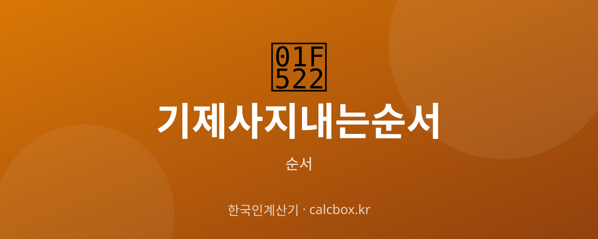

기제사 지내는 순서 — 고인 기일 제사 절차 단계별 정리
돌아가신 분의 기일(忌日)에 지내는 정식 제사, 기제사. 강신부터 음복까지 전통 절차를 순서대로 정리했습니다.

기제사 순서 한눈에
기제사(忌祭祀)는 조상이 돌아가신 날(기일)에 그 고인을 기리며 지내는 제사입니다. 예로부터 기일 자정 무렵에 지냈으며, 오늘날에는 저녁 시간에 지내는 집안도 많습니다.
명절 차례가 여러 조상을 함께 모시는 간소한 의례라면, 기제사는 축문을 읽는 등 절차가 더 갖춰진 정식 제사입니다. 아래는 전통적인 순서로, 지역·가문에 따라 차이가 있습니다.
기제사 순서 정리
일반적인 기제사 진행 순서입니다.
- 1. 진설 — 제사상에 격식에 맞게 제수(음식)를 차립니다.
- 2. 강신 — 제주가 향을 피우고, 술을 모사그릇에 조금씩 부어 조상의 혼백을 모십니다.
- 3. 참신 — 참석자 모두가 함께 두 번 절하여 조상을 뵙습니다.
- 4. 초헌 — 제주가 첫 번째 잔을 올리고 절합니다.
- 5. 독축 — 축관이 축문을 읽어 제사의 뜻을 고합니다. 이때 모두 잠시 엎드립니다.
- 6. 아헌 — 두 번째 잔을 올립니다. 보통 종부(맏며느리)나 다음 항렬이 맡습니다.
- 7. 종헌 — 세 번째 잔을 올립니다. 세 번째 헌관이 맡습니다.
- 8. 유식(첨작·삽시정저) — 잔에 술을 조금 더 채우고, 메(밥)에 숟가락을 꽂고 젓가락을 올려 식사를 권합니다.
- 9. 합문 — 조상이 편히 드시도록 문을 닫거나 병풍을 치고 잠시 밖에서 기다립니다.
- 10. 계문 — 기침 소리를 내고 다시 들어옵니다.
- 11. 헌다 — 국을 물리고 숭늉(냉수)을 올린 뒤 밥을 조금 떠 말아 둡니다.
- 12. 사신 — 숟가락과 젓가락을 거두고, 참석자 모두 두 번 절하여 조상을 보내드립니다.
- 13. 철상 — 제사상을 물리고 지방·축문을 태웁니다.
- 14. 음복 — 제사 음식을 나눠 먹으며 조상의 복을 함께 나눕니다.
참고사항
절차와 명칭은 지역(예: 안동 등 지방)과 가문, 종교에 따라 다를 수 있습니다. 요즘은 절차를 간소화하는 집안도 많으니, 집안 어른의 방식을 따르는 것이 가장 좋습니다. 축문 없이 지내는 경우 독축을 생략합니다.
자주 묻는 질문 (FAQ)
Q. 기제사와 차례는 어떻게 다른가요?
기제사는 조상이 돌아가신 날(기일)에 한 분(내외)을 모시고 축문을 읽는 정식 제사입니다. 차례는 설·추석 등 명절에 여러 조상을 함께 모시는 간소한 의례로, 보통 축문 없이 술을 한 번만 올립니다.
Q. 기제사는 언제 지내나요?
전통적으로는 고인이 돌아가신 날 자정 무렵(첫 새벽)에 지냈습니다. 현대에는 편의상 기일 저녁에 지내는 집안도 많습니다.
Q. 초헌·아헌·종헌은 누가 하나요?
초헌은 제주(맏이), 아헌은 종부나 다음 항렬, 종헌은 그다음 가까운 친족이 맡는 것이 일반적입니다. 집안 관례에 따라 정하면 됩니다.